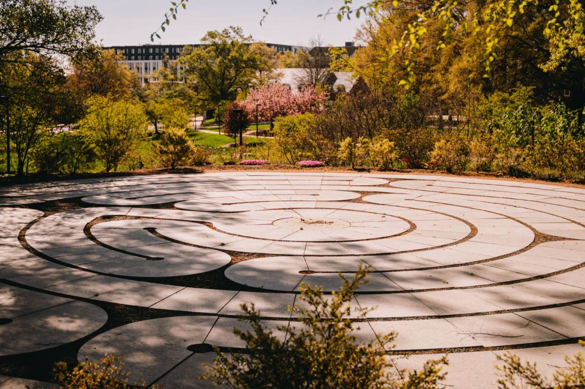
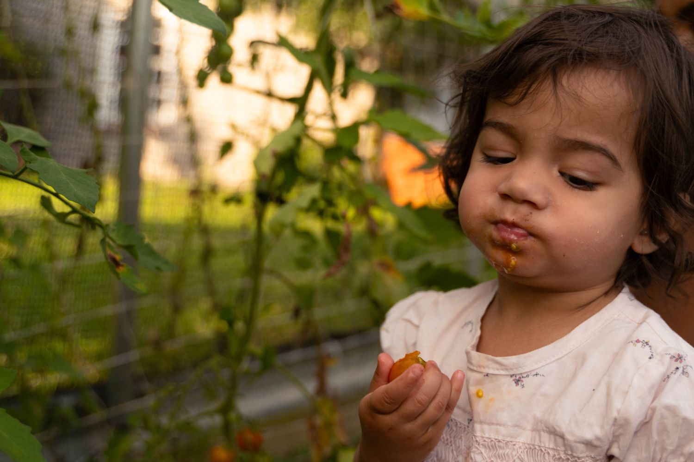
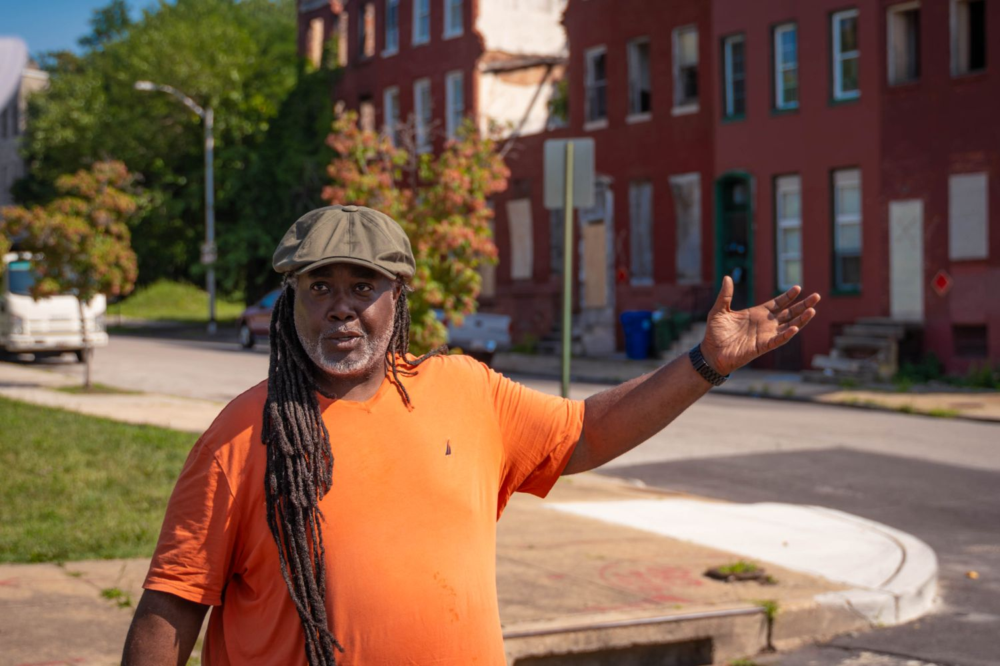
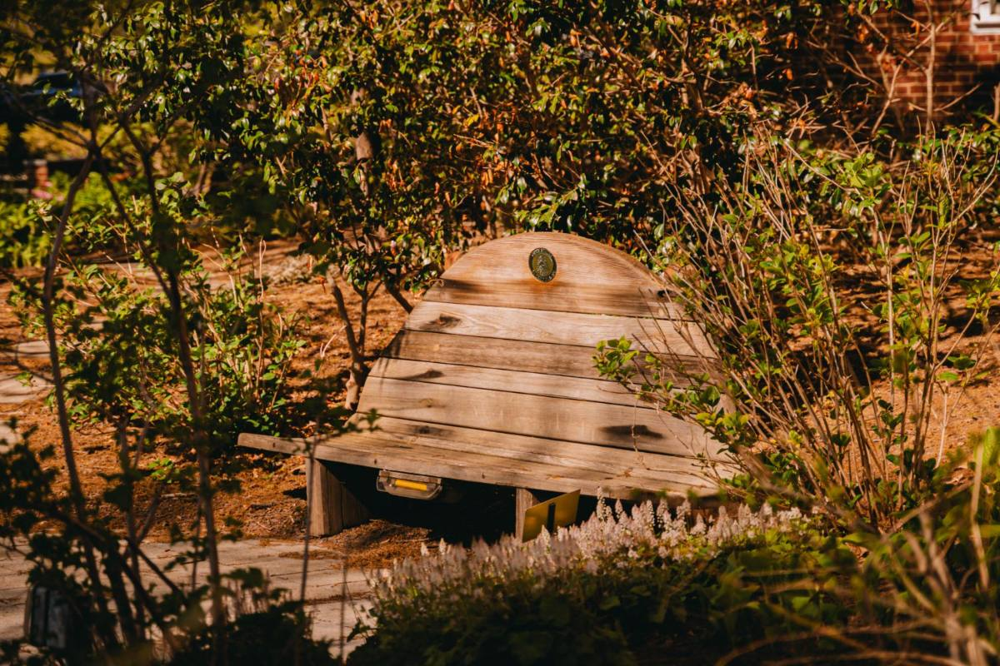
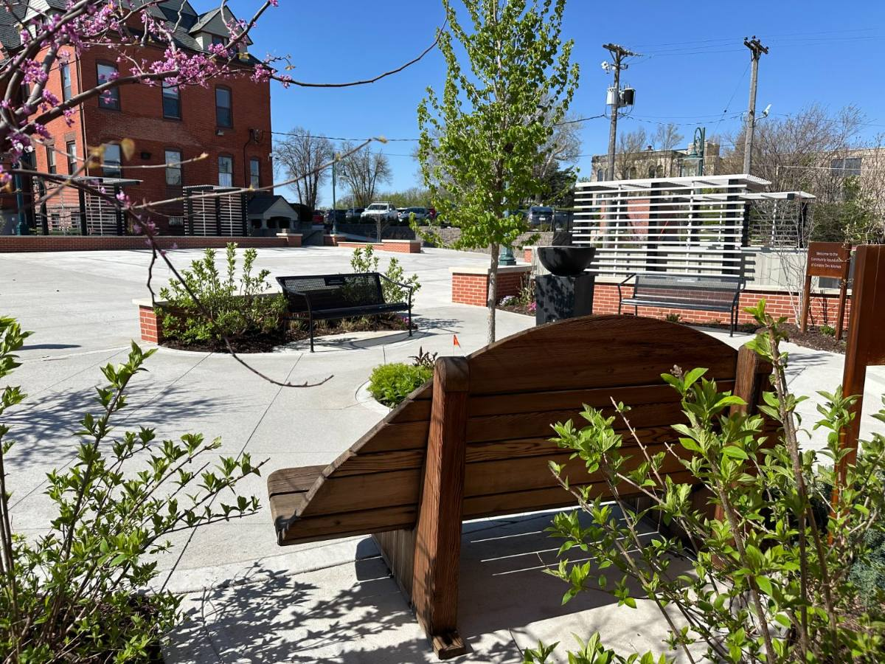
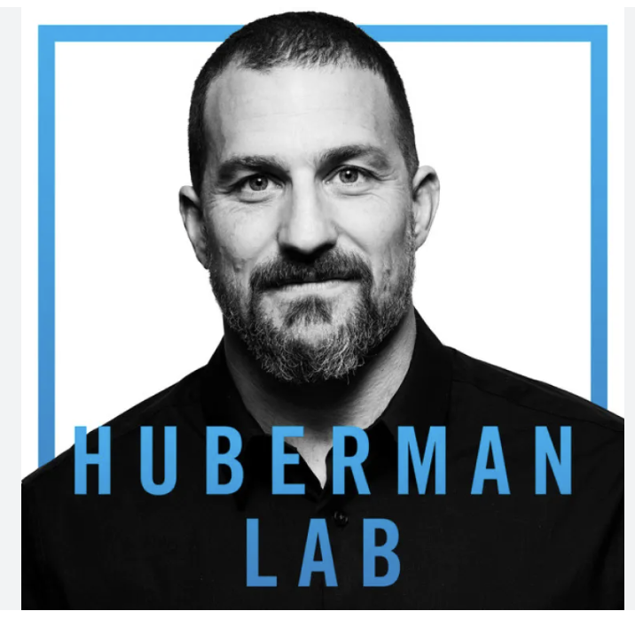
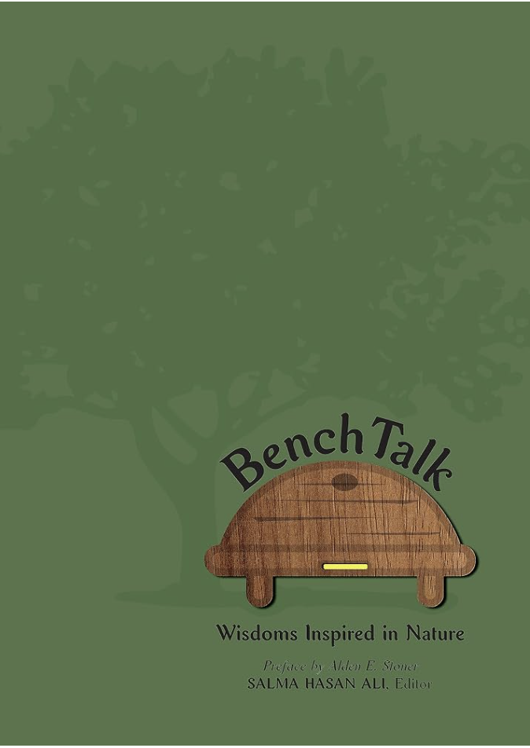
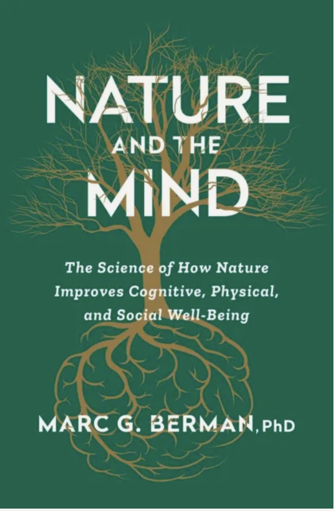
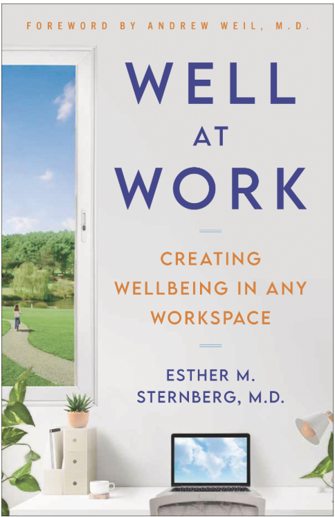
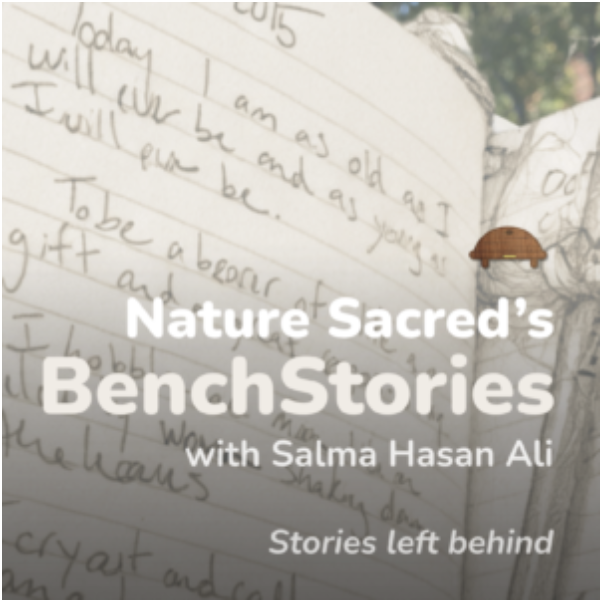

News & Stories
Nature Sacred · 1996–2026
What's happening across the Network.
Firesoul stories, research findings, press, film, and voices from the benches — a running record of what nearby nature is doing for people. Read it, watch it, or listen on the way somewhere.
Featured this month
Read · Research
Green space is essential infrastructure. So say the people who live there.
June 2026
Watch · WUSA-TV
WUSA9 visits Crispus Attucks Park, a hidden acre in Bloomingdale.
June 1, 2026 · 4 min segment
Listen · BenchStories
Twelve episodes a year · 3–5 minutes
Words left on a bench, read aloud.
Three ways in
Pick your medium
Read
Stories, research, press
{{ story.title }}
{{ story.blurb }}
{{ story.date }}
Bookshelf
Published, appeared in, recommended
Watch
Broadcast & films
Short films, news segments, and quiet visits.
Our own films
More films from across the national Nature Sacred Network live on our YouTube channel.
Visit the channel →
What can happen in Sacred Places?
A quiet tour: a Sacred Place at The League for People with Disabilities
Listen
Podlet & conversations

BenchStories
Journal entries read aloud by Salma Hasan Ali. Twelve episodes a year, three to five minutes each.
All episodes and platforms →
{{ ep.label }}
{{ ep.season }} · {{ ep.length }}
{{ ep.title }}
{{ ep.blurb }}
Get in touch
Working on a story? We're glad to help.
Interviews, photography, research findings, and introductions to Firesouls in your area.
Contact our team →Never miss a story.
Updates, stories, and inspiration from inside the movement—direct to your inbox. Follow along on Instagram and LinkedIn, too.
Sign up for our newsletter →